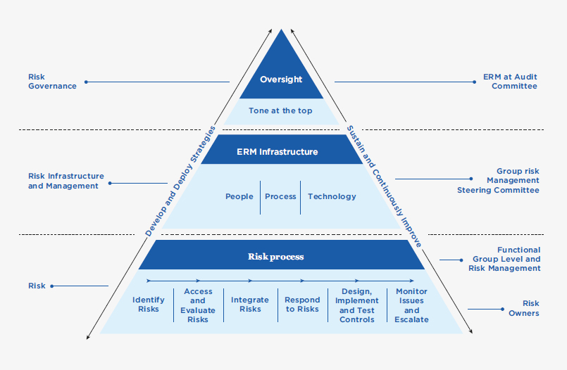

Throughout this decade, global and domestic telecommunication market was subjected to changes due to volatile market conditions raised by entrants of OTT players disrupting traditional operations, fast-changing technologies especially in mobile operations and device market, further enhanced by economic uncertainties due to world politics among major economies, pandemic outbreaks. Domestic industry also changed accordingly with mergers between operators. Hence, it is vital for an organisation to foresee business-critical risks and manage them effectively. Having considered the importance, the Board of Directors (BOD) has given directions to implement effective risk management processes across the organisation. Complying with the Board’s direction, SLT developed the Enterprise Risk Management (ERM) process and the ERM framework. References have been made to the best practices of ERM such as ISO 31000 and COSO and due guidance has been obtained from Messrs Deloitte in this regard. SLT has started to identify and manage its functional risks in its day-to-day business activities with the implementation of ERM process. Therefore, a risk management culture is inculcated within the organisation.
A formal process for reporting risks to the Board was introduced with the aim of enhancing and driving the ERM process. In order to support this process, a Risk Management Steering Committee (RMSC) was formed. This was to aid analysing any escalated risks from functional groups and to identify any business-critical risks as such. Further, the ERM process has been extended to our subsidiaries including Mobitel and the Board reviews Group risks at the Audit Committee meeting. The figure below illustrates the organisation of the ERM and its responsibilities with the relevant groups.

Given below is a summary of top business-critical risks; both industry-specific and company-specific with a brief description of each risk, their potential impact and the actions taken to mitigate them.
Financial markets continue to be volatile and this may heighten execution risk for funding activities and credit risk premiums for market participants.
Telecommunications operators in Sri Lanka collaborate with international vendors in obtaining services for telecommunication system implementation and maintenance, in addition to procuring hardware and software applications inclusive of telecommunication systems. Thus, a significant portion of our capital expenditure as well as operational expenditure is incurred in foreign currencies leading to foreign exchange translation losses.
Sri Lankan rupee continued to depreciate during the year which had a huge impact on the Company’s business and in industry activities as well. We are consistently working on improving foreign currency inflows from our global arm, Xyntac. Through this we are establishing a natural hedge to minimise our exposure to foreign exchange fluctuations. Furthermore, we explore possibility of limiting non-business critical capital expenditure and other liabilities to control cash outflows in terms of foreign currencies.
Intense price competition among the competitors has compelled the operators to maintain low profit margins despite the increasing operational expenditure. Increase of consumers’ power and low switching cost has pressurised the operators in investing on unique product features as well as offering discounts and promotions, further cutting down profits.
As the largest wire-line telecommunication operator in Sri Lanka, our operation and maintenance cost on services provided to domestic customers is significant. We thrive to provide the best after-sales service while keeping our operational cost low through continuous improvements (‘kaizen’) of business process, business process re-engineering and better utilisation of human resources.
With the escalation of cost exceeding revenue growth, cash flow management is vital for smooth business operations. Revenue collection has been identified as an important factor for business operations. Experimenting with new collection channels to improve collection, prioritising investments considering their return and payback period and exploiting OPEX models for investments are few initiatives taken for cash management.
Changes in domestic, regional and global economic conditions may have a material adverse effect on the demand for telecommunications, information technology (IT) and related services, digital services, and hence, on our operations and financial performance. Easter attacks had a significant effect on economic growth. Further, inflation continued to be high and exchange rates remained high which had impact on growth of industry and service sector performance.
Government’s taxation policy on telecommunication services adversely impacts the business of the Company. The newly appointed government revised the financial levies imposed on telecommunication services by removing the Nation Building Tax (NBT) from 2.4% to 0%, reducing Value Added Tax rate (VAT) from 15% to 8% and further reducing Telco Levy (TL) by 25%, from 15% to 11.25%. Therefore, effective tax rates for voice services is reduced from 37.7% to 22.6% and tax rate for data services is reduced from 19.74% to 10.2% effective from December 2019. This initiative is favourable for the telecommunication industry. Further, tax policy revisions on Corporate tax etc. has positive impact on business and its related supply chains.
We are exposed to the risk of regulatory or litigation action by the regulator and other parties. Our operations, aligned with Government’s vision on good governance are subjected to regulatory conditions, various other laws and regulations such as those relating to customer data privacy and protection, anti-bribery and corruption, and workplace safety and health.
Telecommunication businesses require licenses issued by the Sri Lanka Telecommunication Regulatory Commission under the Telecommunication Act. Failures to meet regulatory requirements are liable to fines or other sanctions including litigation. We closely work with our partners in the business to comply with the regulatory requirements. We closely monitor new developments in regulatory framework and regularly participate in discussions and consultations with the respective regulatory authorities and the industry to propose changes and provide feedback on regulatory reforms and developments in the telecommunications and media industry.
We are exposed to the risk of regulatory or litigation action by regulators and other parties. Examples of such litigation are disclosed in Notes to the Financial Statements under “Contingent Liabilities”.
Our investment governance framework and other policies guide the project managers and management in managing contractual arrangements with vendors and customers. We are focused on maintaining high standards in operations with regard to governing laws since litigation actions may have a material effect on our financial condition and results of operations.
In this information society, Organisation’s systems and data are crucial for the business continuity. Loss of sensitive information or any data breach may lead to loss of competitive advantage and loss of customer confidence. Unfortunately, such cybersecurity incidents are becoming more and more common and are increasing in frequency and intensity whilst need for enhanced level of sophistication of information security systems is emphasised.
As our businesses and operations rely heavily on information technology, we have established an Information Security Management System (ISMS) within the Organisation. This ensures internal audits and activities such as vulnerability assessment of critical services, penetration testing, compromise assessment, security architecture review are conducted on a regular basis to ensure compliance with ISO 27001 standard. Remedial actions are taken for identified vulnerabilities.
As we move into new growth areas in ICT to create additional revenue streams through products and solutions such as OTT applications, managed services, cloud services, infrastructure services, cybersecurity, IOT services, data analytics and digital services, it alters the business model. SLT Muve is another diversification move from its traditional business.
New businesses place new demands on people, processes and systems. We respond by continually updating our Organisation structure, reviewing human resource recruitment, training and development plan, reviewing our policies and processes and by investing in new technologies to face digital transformation in the Organisation.
Organisational cultural and mindset change will be a primary factor in transforming the incumbent telecommunication operator in Sri Lanka to adopt with digital transformation of the Organisation.
Golden handshake scheme continued in 2019 for further improving the productivity of the Organisation. Attracting and sustaining talent including new skills and capabilities is a challenge to us. Necessary trainings are offered to our employees to enhance their technical skills and to update themselves with the latest technologies which is in line with our HR strategic plan. We are consistently focused on making Sri Lanka Telecom a Great Place To Work.